Using Zotero
This page will cover the basics of using Zotero, and is structured around the three main tasks you will need to do when using Zotero:
- Create a Zotero library or folder for your project(s)
- Add references to your library
- Cite references in your documents.
Creating a Zotero Library
Zotero’s library system functions similar to a file system on your computer. You can create folders to organize your references, and add tags to references to help you find them later. The images below show how to create a new folder in Zotero, and what a fresh folder looks like.
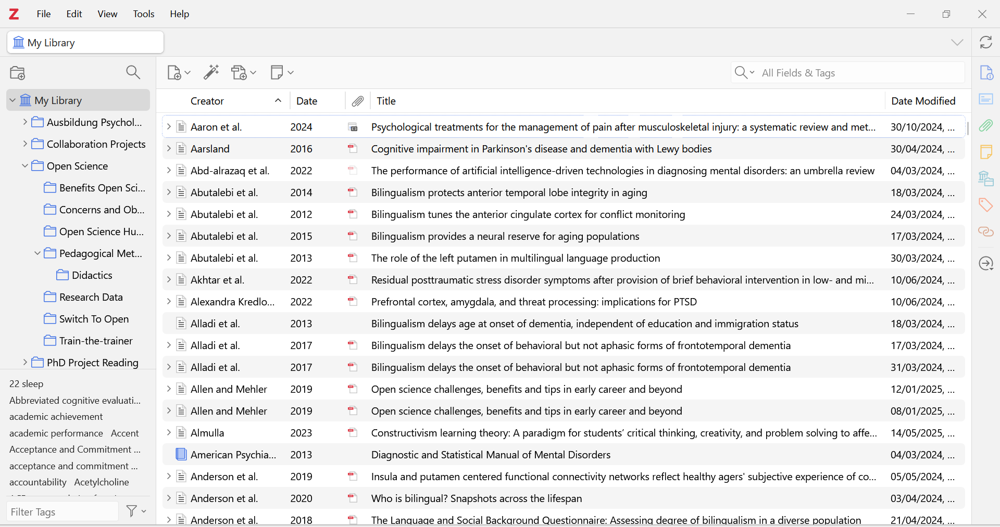
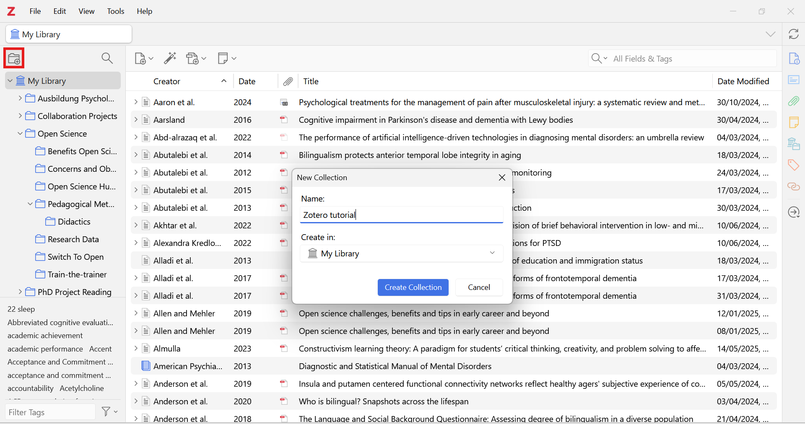
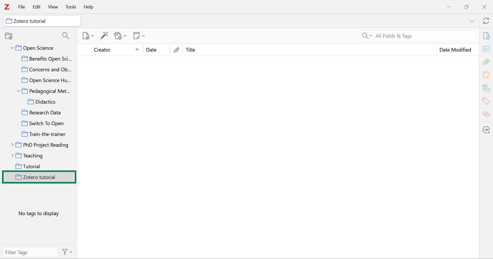
Adding References
While creating libraries/folders for your projects is highly recommended and useful, the more important step in using Zotero is adding references to your library. You can add references to Zotero in several ways:
- Save to Zotero with the Zotero Connector browser extension
- Manual entry
- Import from online databases.
We will outline the first two methods here, as they are the most common ways to add references to Zotero.
Zotero Connector
The most common, fastest, and preferred way of entering references is by using the Zotero Connector browser extension.
The Zotero Connector allows you to save references directly from your browser to your Zotero library. The connector will, when possible, download a PDF of the article and attach it to the reference. If you save content from a webpage that does not have an available PDF download of the content, the Connector will take a snapshot of the webpage to preserve the information in case the page is later changed or removed.
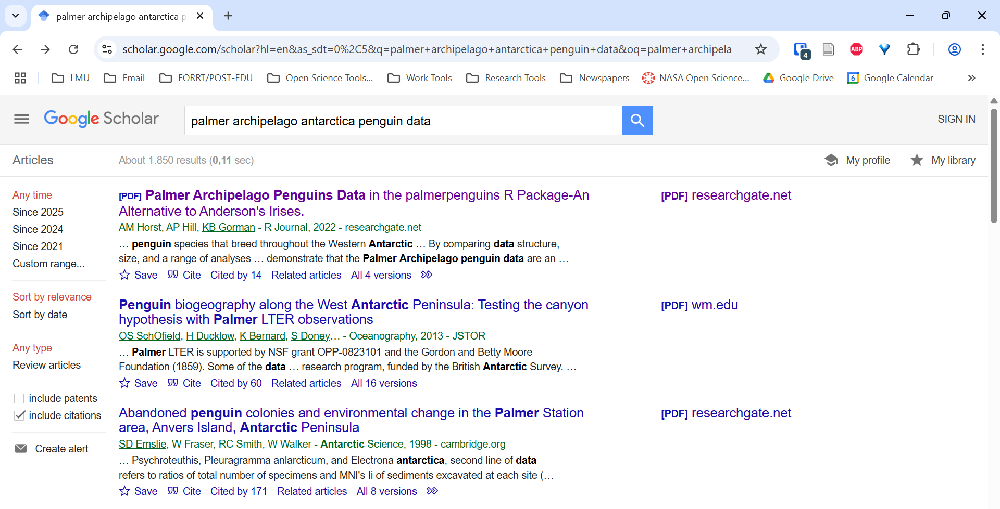
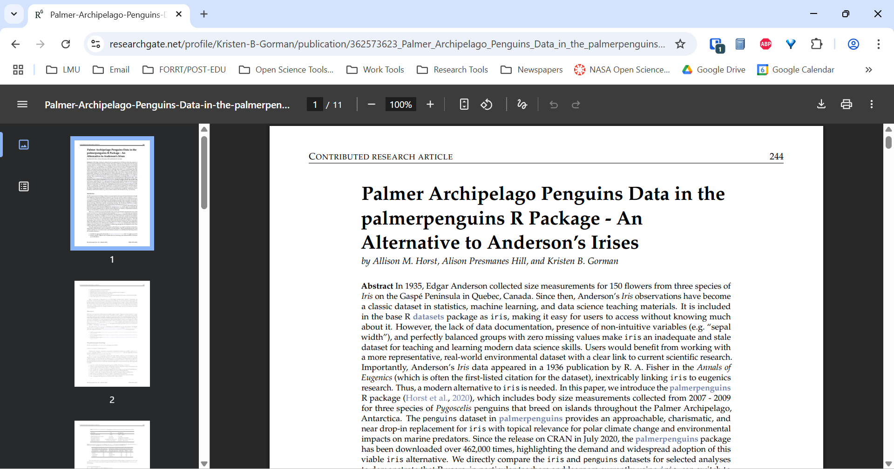
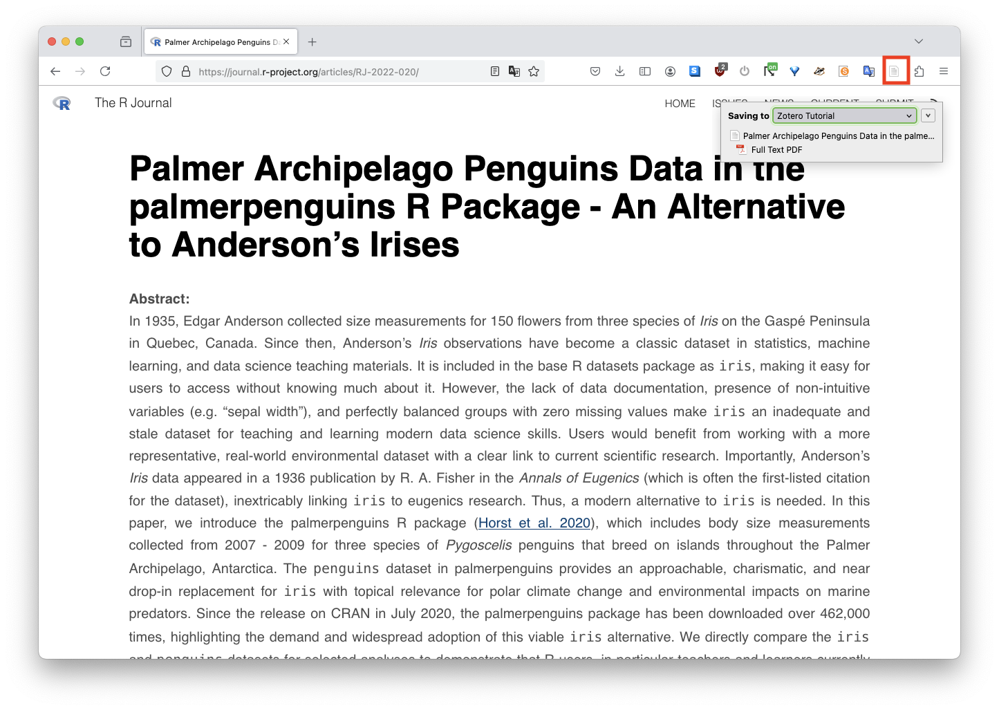
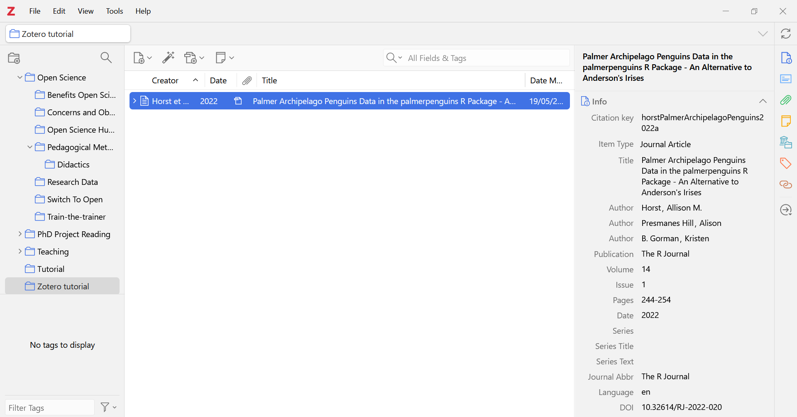
Manual Entries
The Zotero Connector is not perfect, however, and you may occasionally need to “manually” enter a reference. To do this, click on the “New Item” button in Zotero, and select the type of reference you want to add. You can then enter the metadata for the reference manually. This is a more time-consuming process than using the Zotero Connector, but it is necessary if you cannot find the reference online (e.g. a book or a conference presentation).
However, if you can find a BibTex or RIS file for the reference, you can import the reference into Zotero by dragging and dropping the file into the Zotero window, or by copying the BibTex content and then selecting File -> Import from Clipboard in Zotero.
The example below will demonstrate how to manually import a BibTex entry. All you really need to know about BibTex is that it is a commonly-used, structured file format for bibliographic entries and bibliographies (BibTeX 2026).
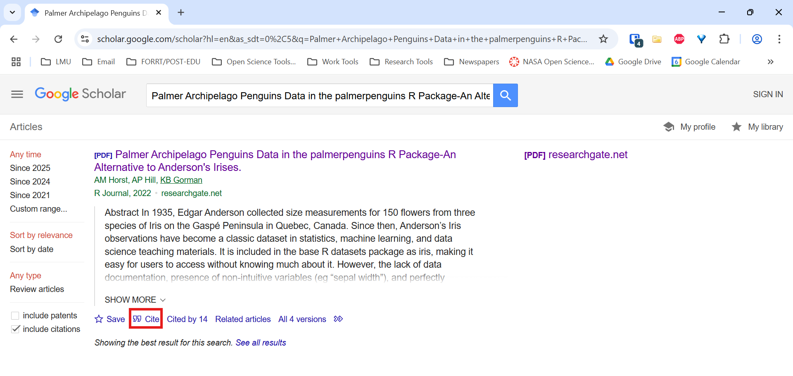
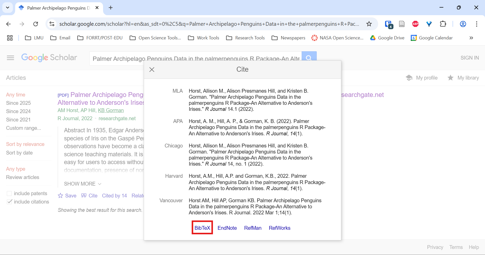
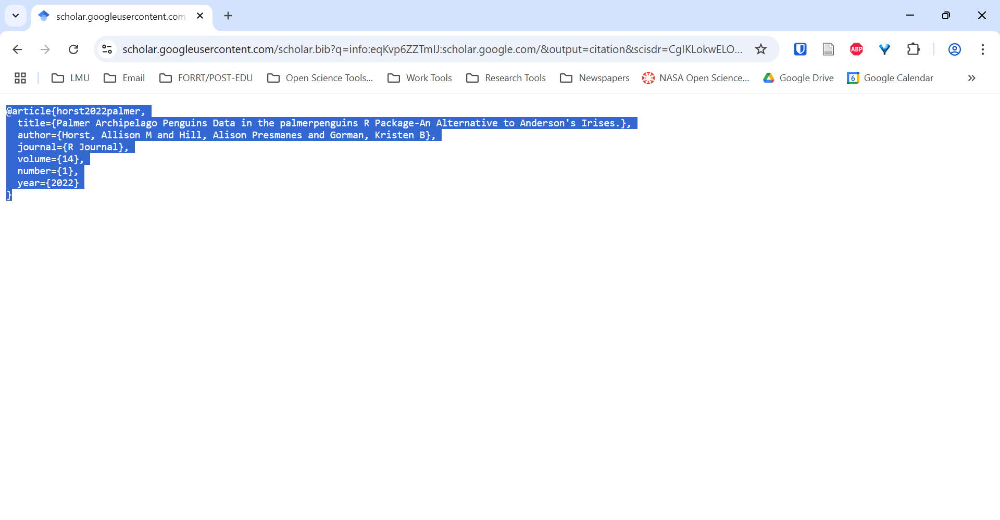
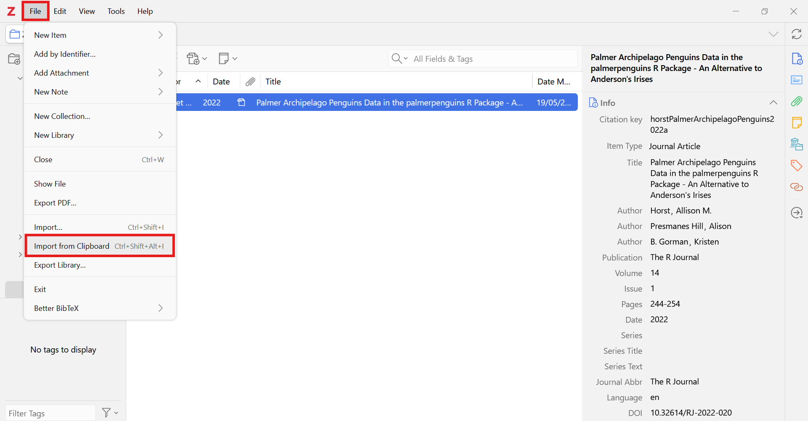
File -> Import from Clipboard to import the BibTex entry.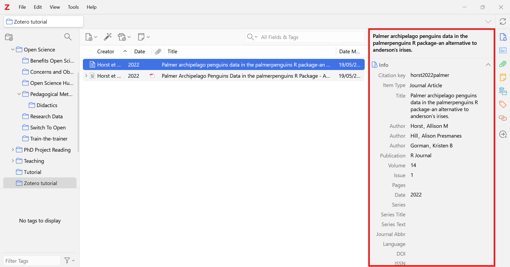
Less commonly, you may need to import references from other software. To do this, export the references from the software in a compatible format, and import them into Zotero. Zotero can import references from a variety of formats, including BibTex, RIS, and EndNote XML.
Importing from Online Databases
Zotero can also import references directly from online databases using an identifier such as a DOI, ISBN, or PMID. To do this, click on the “Add Item by Identifier” button in Zotero, and enter the identifier for the reference you want to add. Zotero will then search for the reference online and add it to your library.
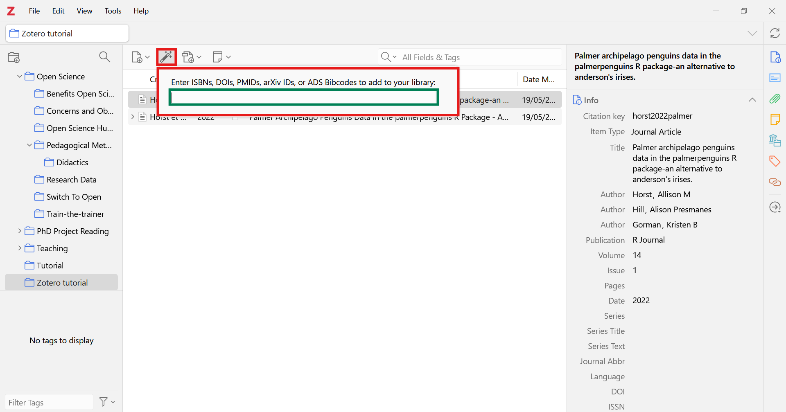
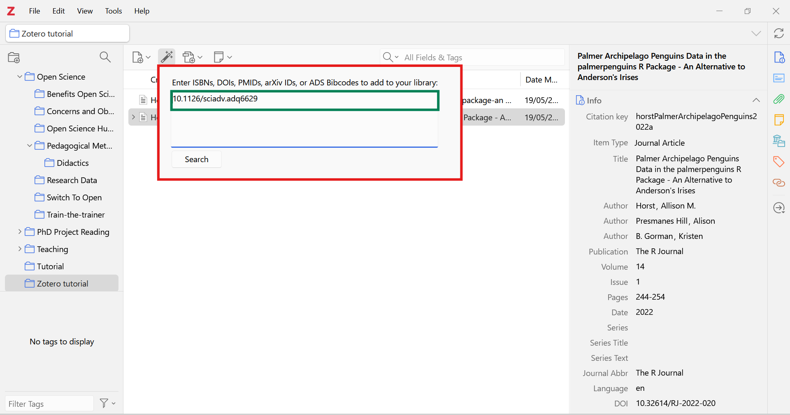
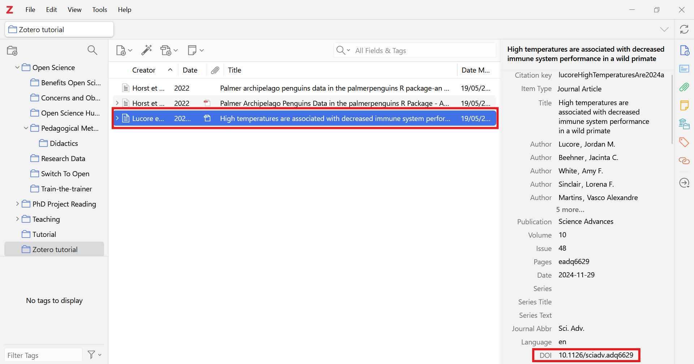
Citing References with Zotero
The main point of using Zotero, of course, is to cite references in your documents. Zotero makes this easy by providing plugins for popular word processors like Microsoft Word and LibreOffice. These word processor plugins should be installed automatically when you install Zotero.
Inserting citations and bibliographies into Quarto and Word documents are specifically covered in later chapters. However, we first describe how to manually generate bibliographies and provide some details on the BibTex format.
Generating Bibliographies
Text Formatted
You can generate a bibliography by right-clicking on the folder or publication of interest, and selecting the option to “Create Bibliography from Collection.” From there, you will be prompted to choose a citation style and an output method (i.e. copy to clipboard, save as file, etc.).
This option to quickly generate a bibliography is useful if you are using a text editor that does not have a Zotero plugin to paste the bibliography to, or if you simply need a one-and-done bibliography for a smaller project.
For more details, see the Zotero documentation on creating bibliographies.
BibTex and .bib Files
If you are using a text editor that does not have a Zotero plugin, you can export a BibTex file directly from Zotero to generate a bibliography. However, you will generally not need to make or edit BibTex files if you are using a word processor with a Zotero plugin, as the plugin will automatically generate the bibliography for you.
To export a BibTex file from Zotero, right-click on the folder or publication of interest, and select the option to “Export Collection.” You can then choose the BibTex format from the drop-down menu, and save the .bib file to your computer. You can then include this BibTex file in your document to generate a bibliography.
For citations in Quarto, it is important to know that Quarto documents should have a .bib file in the same directory as the .qmd file plus a reference to the .bib file in the YAML header. This will be discussed in the Citations in Quarto chapter.
Other Features
This page has covered the basics of using Zotero, but there are many other features that Zotero offers that you may find useful. Some of these topics will be covered in more detail in optional chapters at the end of this tutorial, but here are a few other features that you may find useful:
Organizing References
You can organize your references in Zotero by creating collections and tags. To create a collection, click on the “New Collection” button, and give the collection a name. To add references to this collection, simply drag and drop the references into the collection. To add tags to a reference, click on the “Tags” tab, and enter the tags you want to add. These tags are particularly convenient if you want to later search your library for references on a specific topic as defined by you.
Collaborating with others
You can also collaborate with others by sharing your references with them, generally by creating a Zotero group, see the Zotero Groups chapter for details. The contents of these groups are shared with all members online, and you can set the group to be public or private.
Public groups are open to anyone, while private groups require an invitation to join. You can also create a group library, which is a shared library that all members can edit. This is useful if you are working on a project with others and want to share references with them.
Notetaking
Zotero can function as a note-taking app. To add a note to a reference, click on the “Notes” tab, and enter the note you want to add. These notes can be useful if you want to record your thoughts on a reference, or if you want to summarize the key points of the reference.
Collecting Quotes in Notes
Zotero also allows you to easily collect quotes from your references that automatically include a citation to the author, paper, and the publication year. This feature specifically works for PDFs that you have saved in your Zotero library. To use this feature, open the PDF of interest, copy the text you want to quote, and paste it into a note. Zotero will automatically include the citation information for the quote.